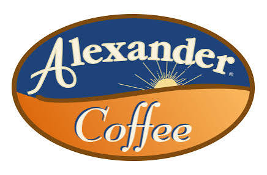
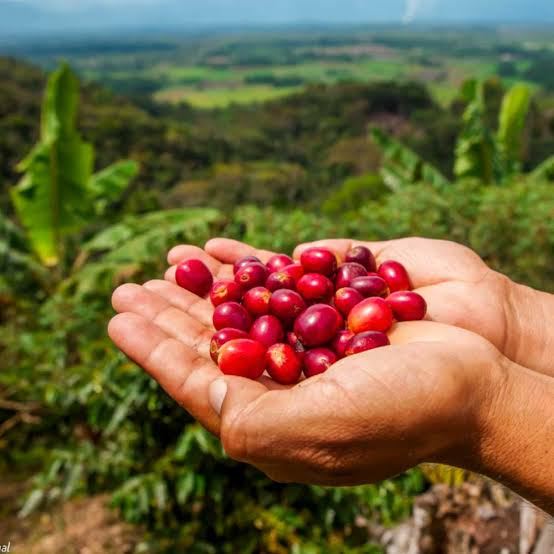
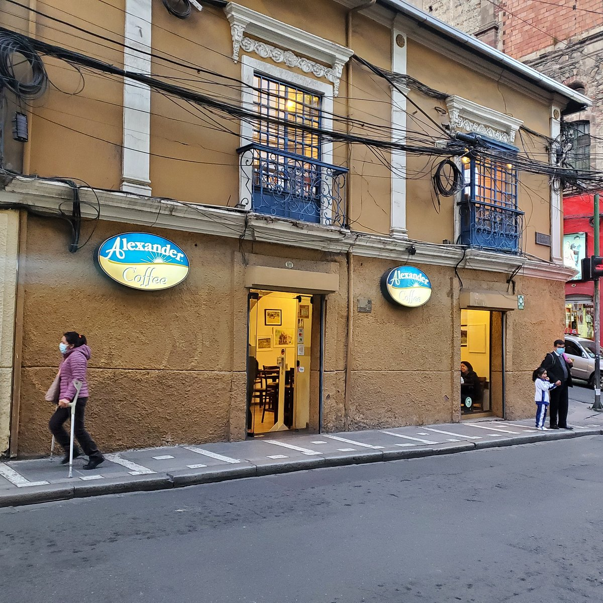

Café en grano · bolsa de 1 libra
Tostado el mismo día en nuestra planta central, a partir del grano de las comunidades del Madidi.
Disponible en sucursales y por delivery
Café de especialidad boliviano · La Paz desde 1996
Un tercer lugar entre el trabajo, la familia y el reencuentro, con grano tostado a diario.
Desde una esquina de tres mesas en la calle Montenegro hasta una red que hoy conecta La Paz, El Alto y Santa Cruz, Alexander Coffee construyó su identidad sobre una idea simple: café de origen, servido por gente que conoce a sus clientes por su nombre.

La leche puede pedirse entera, descremada, deslactosada o de soya en cualquier preparación. Los precios se expresan en Bs., moneda nacional de Bolivia.
| Producto | Descripción | Precio simple (Bs.) | Precio doble (Bs.) |
|---|---|---|---|
| Espresso / Cortado | Extracción pura o cortada con espuma de leche | 10.00 – 11.00 | 14.00 – 15.00 |
| Café destilado | Preparación por goteo | 11.00 – 12.00 | 15.00 – 17.00 |
| Descafeinado | Grano sin cafeína, mismo método de filtro | 11.00 – 12.00 | 15.00 – 17.00 |
| Producto | Descripción | Precio simple (Bs.) | Precio doble (Bs.) |
|---|---|---|---|
| Cappuccino / Light | Espresso, leche caliente, espuma y canela | 16.00 | 24.00 |
| Café Latte / Mocha | Con esencias a elección, o chocolate y crema batida | 18.00 | 26.00 |
| Café Bombón / Amaretto | Con leche condensada, o licor Amaretto y crema | 12.00 – 38.00 | 16.00 |
| Producto | Descripción | Precio (Bs.) |
|---|---|---|
| Cappuccino / Té frappeado | Hielo triturado con café o té gourmet | 20.00 – 22.00 |
| Chocolate caliente | Chocolate artesanal espeso | 13.00 – 19.00 |
| Té Metropolitan | Variedad de tés de hoja, simple o doble | 13.00 – 29.00 |
| Producto | Descripción | Precio (Bs.) |
|---|---|---|
| Cookies, muffins, brownies | Sabores caseros, opción con helado | 6.50 – 21.00 |
| Cinnamon roll, croissants, empanadas | Masas horneadas, simples, con queso o jamón | 6.00 – 15.00 |
| Torta de Oro (porción) | Elaborada con harina de quinua | 20.00 – 29.00 |
| Desayuno Continental / Americano | Jugo, tostadas, huevos y café o té | 43.00 – 75.00 |
| Producto | Descripción | Precio (Bs.) |
|---|---|---|
| Hamburguesa Tex-Mex | Con jalapeños y guarniciones | 38.00 – 97.00 |
| Flautas | Rellenas de pollo o carne | 38.00 – 97.00 |
| Platos andinos | Preparados con quinua y habas | 38.00 – 97.00 |
El café verde llega directamente desde comunidades agrícolas del Madidi y los Yungas paceños, mediante alianzas que sostienen el desarrollo de esos productores. Cada lote se tuesta a diario en una planta central antes de distribuirse a las sucursales, para que la taza —o la bolsa de una libra— conserve sus propiedades óptimas.

La empresa capacita a su equipo en barismo, atención comercial y desarrollo personal, lo que sostiene una baja rotación de personal y una experiencia de servicio constante en cada sucursal.
Presencia en enclaves financieros, culturales, comerciales, de salud y de tránsito internacional, entre La Paz y El Alto.
| Sucursal | Dirección | Zona | Teléfono |
|---|---|---|---|
| Oficina Central Miraflores | Calle Juan de Vargas Nº 2370 | Miraflores | 2221259 |
| Sucursal Prado | Av. 16 de Julio Nº 1832 | Centro | 2312790 |
| Sucursal Potosí | Calle Potosí Nº 1091 | Centro | 2406482 |
| Sucursal Plaza Avaroa | Av. 20 de Octubre Nº 2463 | Sopocachi | 2431006 |
| Sucursal Multicine | Av. Arce Nº 2631, Edif. Multicine | Sopocachi | 2145916 |
| Sucursal Clínica CEMES | Av. 6 de Agosto Nº 2881 | Sopocachi | 76762583 |
| Agencia 21 San Miguel | Calle 21 de Calacoto, Edif. Santa Fé PB Nº 2881 | Zona Sur | 2113810 |
| San Miguel Montenegro | Av. Mariscal Montenegro Nº 1336, Bloque B | Zona Sur | 2773410 |
| Aeropuerto El Alto (Nacional) | Pre-embarque nacional | El Alto | 2157496 |
| Aeropuerto El Alto (Internacional) | Pre-embarque internacional | El Alto | 2157495 |
| Aeropuerto El Alto (Hall) | Hall público | El Alto | 76762582 |
Horarios de referencia: la sucursal Multicine atiende de a , todos los días; la sucursal Montenegro extiende su atención hasta las .
Café en grano recién tostado y tortas enteras para eventos, coordinados directamente con nuestro equipo.

Tostado el mismo día en nuestra planta central, a partir del grano de las comunidades del Madidi.
Disponible en sucursales y por delivery
Cheesecakes, pies y tortas de la casa, incluyendo la Torta de Oro con harina de quinua.
Bs. 180.00 – 280.00
Las tortas y pies enteros se preparan bajo pedido con un mínimo de 48 horas de anticipación.
Pago con código QR (QR Simple, y de los bancos Fassil, BCP y Bisa) y tarjetas de débito o crédito nacionales.
Sí, platos, bebidas y café en grano están disponibles a través de PedidosYa.
Más de 200 colaboradores forman el equipo de Alexander Coffee. La formación no se limita a las técnicas de barismo y atención: incluye también desarrollo personal, con el objetivo de sostener un espacio de trabajo estable y de baja rotación.
Si te interesa formar parte del equipo, escríbenos con tu CV a la oficina central:
Alexander Coffee Shop S.R.L. — Oficina Central Miraflores